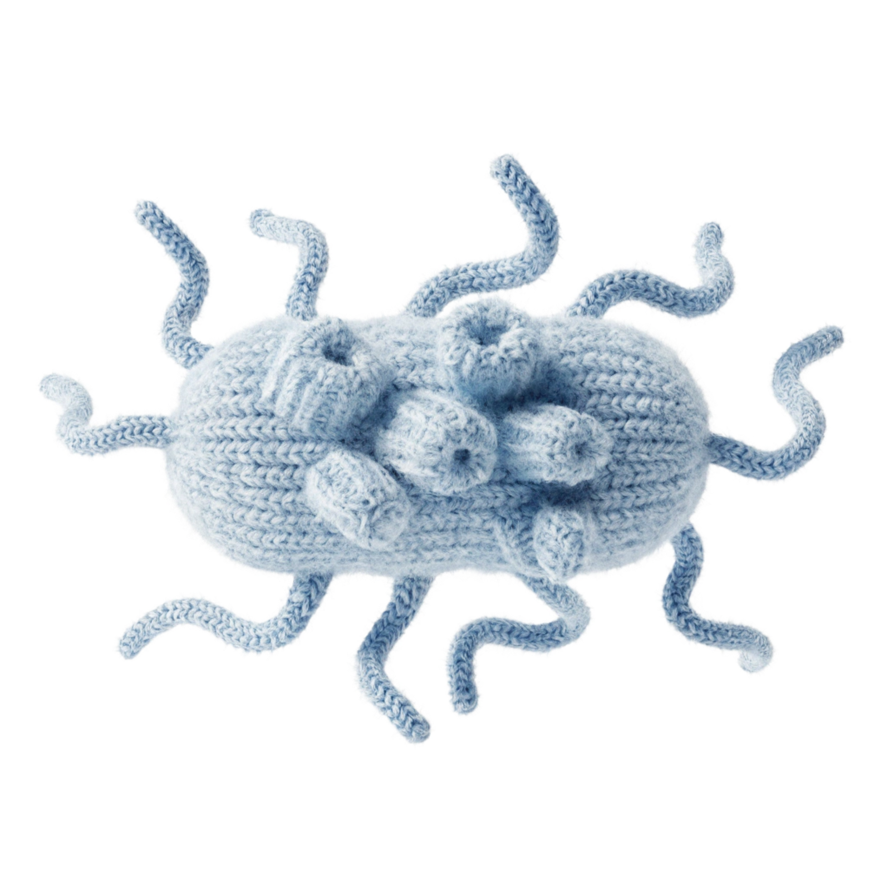

La puce du chat (Ctenocephalides felis) est la plus repandue en France. Elle infeste les habitations via les animaux domestiques mais n'hesite pas a piquer les humains. Une intervention professionnelle est souvent necessaire pour eliminer les oeufs et larves caches dans les textiles.

Les produits du commerce ne suffisent pas a eliminer les oeufs et larves. Nos techniciens traitent l'ensemble de votre habitation.